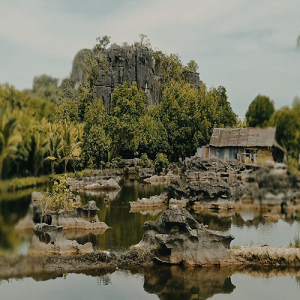
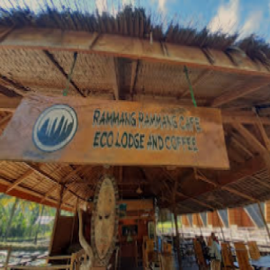
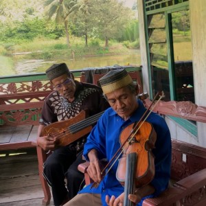
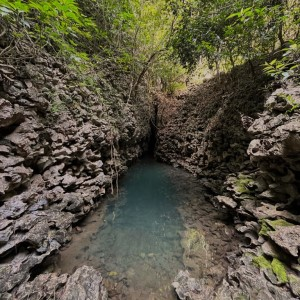
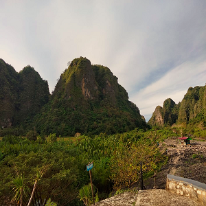

TOURISM DESTINATIONS

The Labyrinth Stone
The labyrinth stone of Laku Village is one of the local tourist
destinations that offers natural scenery with a background of karst
hills.
Read More

Eco Lodge Cafe
For you culinary lovers who likes to enjoy the beauty of Rammang -
Rammang and the thrill of boat tours
Read More

Cultural Village of Massaloeng
Most of the area of Massaloeng Village is covered by karst hills,
ponds and rice fields.
Read More

Fireflies Cave
This destination, known as the Fireflies Cave is one of the
other unique things that are preserved
Read More

The Angel Lake
Another one that should not be missed when visiting Rammang Rammang
is a small paradise that hidden behind karst rocks.
Read More

Berua Village
It's no longer foreign to the ears of local tourists especially Makassar,
the exotic beauty of Berua Village.
Read More